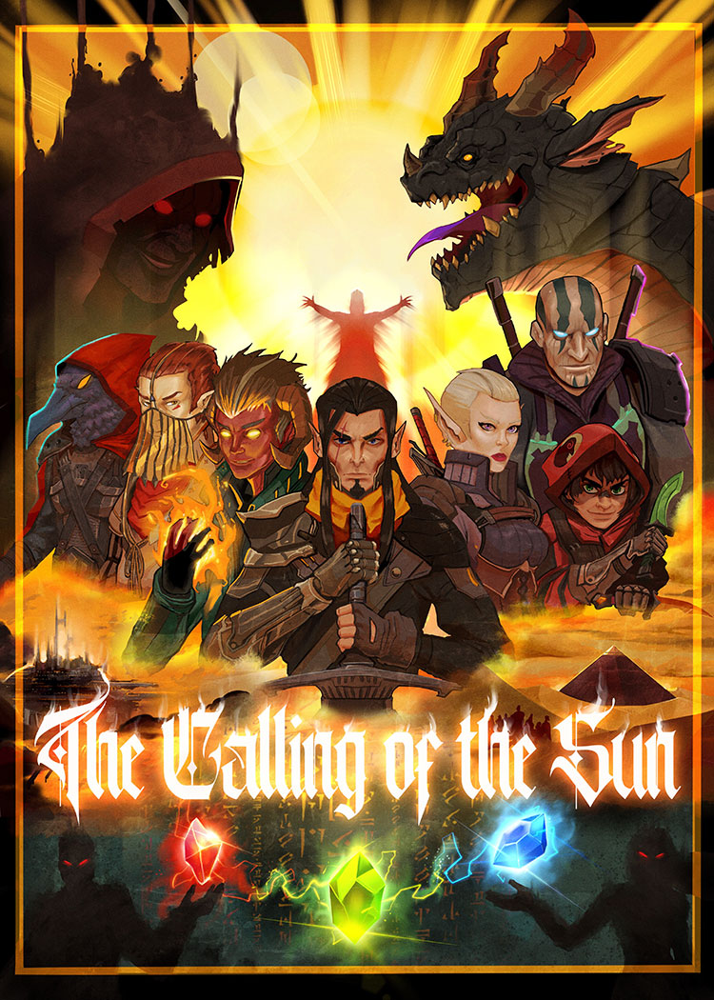

<DOCTYPE! html>
<html>
<head>
<link href='https://fonts.googleapis.com/css?family=IM Fell DW Pica SC' rel='stylesheet'>
<meta name="viewport" content="width=device-width, initial-scale=1">
<link rel="stylesheet" href="pages/index.css">


<h1>Welcome to Zu!</h1> 
<div class="nav">
	<a href="index.html">Home</a> |
	<a href="pages/cbios.html">Characters</a> |
	<a href="pages/summaries.html">Story so far. . . </a>  |    
	<a href="pages/beastiary.html">Lions,Tigers, Giant Bat Creatures, OH MY!</a> |    
	<a href="pages/atlas.html">World Atlas</a>   |    
	<a href="pages/codex.html">Codex</a>    |    
</div>
<body>

<figure id="figure" >
	
	<figcaption class='figcaption'>Artist credit:<a href='https://gmarsilla.com' target='_blank'> Guillermo Marsilla</a> Characters from left to right: The Hand, Amir, Klaas, Rondel, Tontai, Fedilius, Vorin</figcaption>
</figure>

        <aside>
	<h2>Introduction</h2>
	<p>
	 "It's incredible to think about how long this story has been brewing in my imagination.
	 Of course, it wasn't present all of the time, (I think that would qualify as being insane), 
	 but it's been waiting to be told somehow. 

	 I saw Guillermo's work through Reddit and thought he had the best style for the tone of this tale.
	 I provided him with brief character descriptions and left a lot of artist interpretation up to him as I trusted his instincts.
	 The end result is this piece shown here!

	 This is a "movie poster" piece to highlight Act 1, The Calling of the Sun! 
	 Within the image are all of the main party members, The Invaders, and certain events of the Act depicted such as 
	 the guided fall of La Luna and the finding of the Gynosphinx's temple.
	
	 I thought this would be a cool time capsule of sorts for this campaign here!
	 
	 Thank you for allowing me to tell this story in this format and for helping me tell it! " -Kelvin
	</p>
	</aside>


</body>
</html>